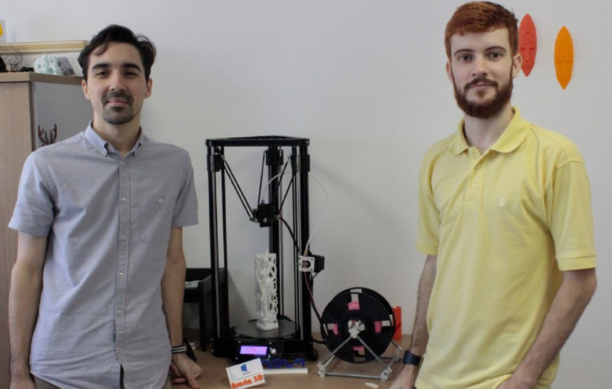

Estágio Aresta 3D
Fui estagiário na Startup Aresta 3D, empresa de impressão 3D acelerada pela incubadora Inova Metrópole. No decorrer do trabalho, me foram atribuídas
funções de manutenção de hardware e software das impressoras, desenho 3D dos produtos a serem impressos e projetos de produto. Porém, com o passar do
tempo, se tornou necessário exercer funções de gestão e vendas, uma vez que a força de trabalho se resumiu a mim e ao fundador da empresa. Assim,
o conhecimento adquirido nesta experiência se expandiu para além do trabalho de um simples estagiário, sendo necessário vestir a camisa da empresa
e me responsabilizar pelo futuro da mesma.